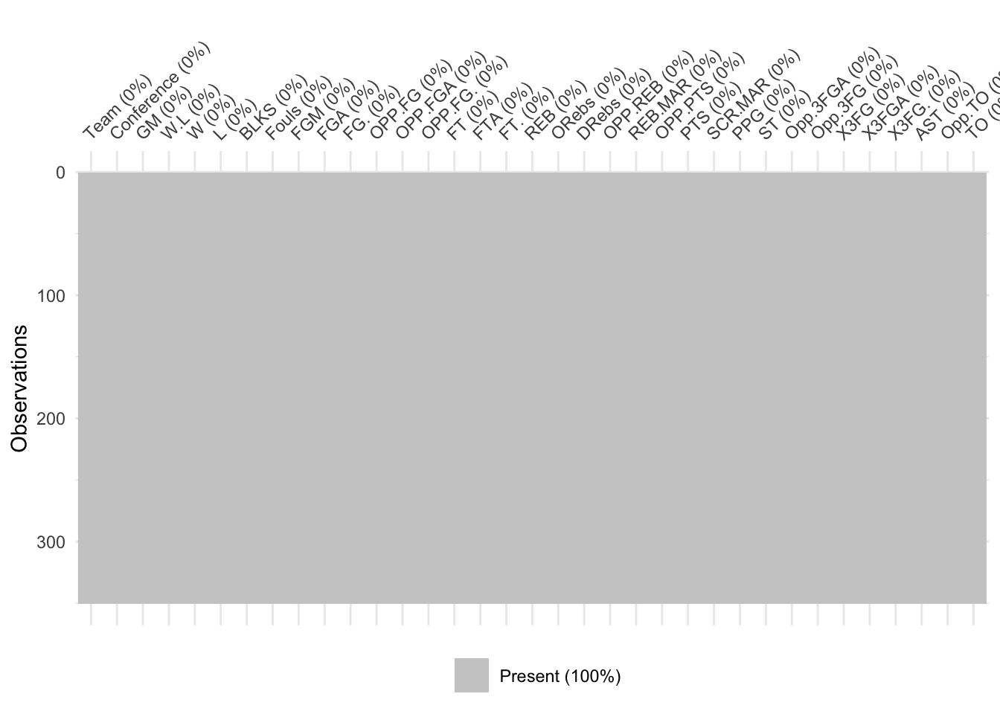

Chapter 3 Data
3.1 Sources
Our data was sourced from the NCAA Statistics National Ranking website (https://stats.ncaa.org/rankings). This website provides public access to statistics across a variety of NCAA sports and divisions. The NCAA Statistics website provides a user interface that allows the user to select the statistic of interest, and download the data related to it.
For our project, we focused on NCAA Division I Men’s basketball conference. We use two kinds of data - Team Statistics and Individual Player Statistics.
3.1.1 Team statistics
The data is available for 350 of the 358 teams in the conference for the 2021-22 season. The 8 teams that do not feature in the data are the ones being transitioned from lower divisions to division I. The team statistics list includes columns on the school’s name (which also includes information about the school’s regional division), number of games played, number of games won and number of games lost.
The team statistics we collected from the website were Blocks, Fouls, Field Goals Made, Field Goals Attempted, Field Goal Percentage, Opponent’s Field Goals Made, Opponent’s Field Goals Attempted, Opponent’s Field Goal Percentage, Free-throws, Free-throws attempted, Free-throw percentage, Total Rebounds, Offensive Rebounds, Defensive Rebounds, Opponent’s Rebounds, Rebound Margin, Points, Opponent’s Points, Scoring Margin, Points Per Game, Steals, Three-Point Field Goals Made, Three-Point Field Goals Attempted, Three-Point Field Goal Percentage, Opponent’s Three-Point Field Goals Made, Opponent’s Three-Point Field Goals Attempted, Assists, Turnovers, Opponent’s Turnovers. In total, we collected 30 team statistics.
3.1.2 Individual Player Statistics
For the players, each statistic is limited to the top 350 players belonging to a specific statistical ranking. In addition to the player statistic of interest, each top 350 player statistics list includes columns on the player’s name (which also includes information about their school’s regional conference), their class level (freshman, sophomore, etc), their height, their basketball position (Guard, Forward, or Center), and the number of games they played.
The player statistics we collected from the website were 3-Point Field Goal Attempts, Assist Turnover Ratio, Assists per Game, Blocked Shots per Game, Defensive Rebounds per Game, Double Doubles, Field-Goal Percentage, Free-Throw Attempts, Free-Throws Made, Free-Throw Percentage, Minutes per Game, Offensive Rebounds per Game, Points per Game, Rebounds per Game, Steals per Game, Three-Point Field Goals per Game, Three-Point Field Goal Percentage, Total Three-Point Field Goals Made, Total Assists, Total Blocks, Total Field Goal Attempts, Total Field Goals Made, Total Minutes, Total Points, Total Rebounds, Total Steals, and Total Triple Doubles. In total, we collected 27 player statistics.
3.2 Cleaning & Transformation
The different statistics for Team and Players were available in separate excel files that had to be combined into 1 master dataframe for Team Statistics and 1 for Individual Player Statistics. The individual player information (player name, height, class level, position, and games played) and team information (school name, games played, and win-loss ratio) were used to merge the different excel files since these fields were common to all. Following this, the team’s regional division was mined and added as a feature in the dataset for both the players and the teams.
3.3 Missing value analysis
3.3.1 Team Statistics Dataset

We can observe from the plot above that we have no missing team statistics. This is due to uniformity in maintaining team stats across all teams in the division.
3.3.2 Player Statistics Dataset

We can observe from the plot above that the only complete features in this data set are the Player’s name (Player), Class level (Cl), Height (Ht), Basketball Position (Pos), Number of games played (G), and their school’s divisional conference (Division).
Beyond this, we can then observe that the remaining data features are each, roughly, 76% missing. From this observation, we can infer that the top 350 individual players from each statistical list we pulled are mostly mutually exclusive. The majority of students do not rank in the top 350 players across more than one top 350 statistical list ranking that we collected. We can see this broken down in the following visualization.
The visualization above depicts the count of the top 40 most frequent intersecting missing value features, with a max intersection of at most 10 missing features. These numbers were chosen for visualization quality.
On the far left, we can observe that the most frequent intersection of missing values (with a max intersection of at most 10 features) is samples with both Free Throw Attempts (FTA), Free Throws Made (FT), Minutes Played (MP), Field Goals Attempted (FGA), Minutes Per Game(MPG), Turn Overs (TO), Assist to Turnover Ration (Ratio), Field Goals Made (FG), 3 Point Field Goal Percentage (X3FG), and Number of Triple Doubles (Trpl.Dbl).
This set of intersecting missing values accounted for 635 samples with missing values. We can then observe a steep drop off for the rest of the intersecting missing value sets, but there is a persistent trend that the large majority of samples that contain a missing value contain a missing value across more than one, and even two, data features. This supports the hypothesis that the large majority of individual players do rank in top 350 players for multiple top 350 player statistic lists.